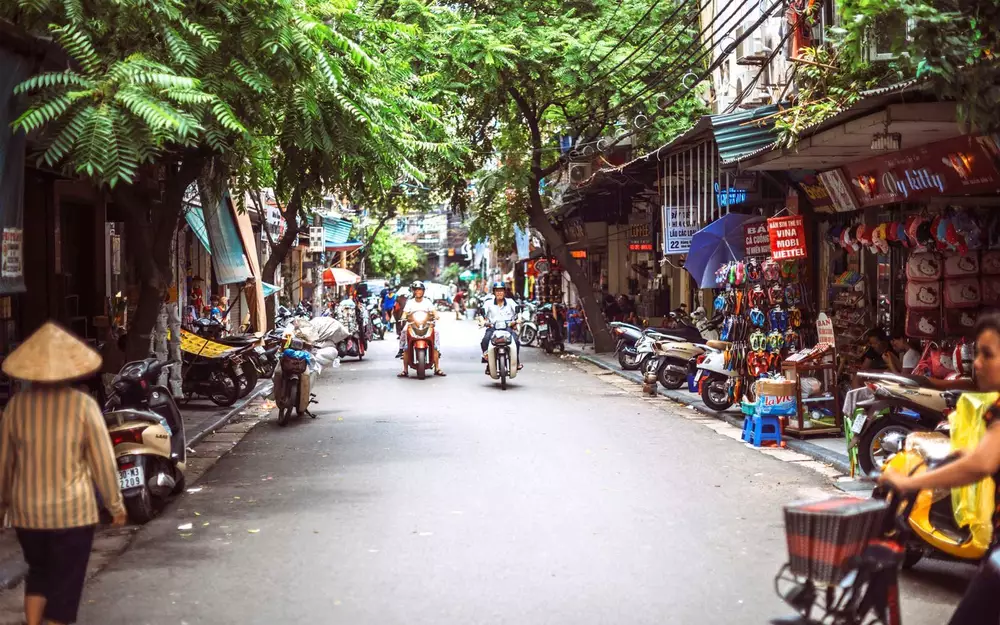
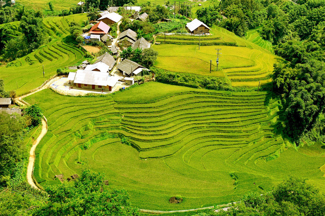
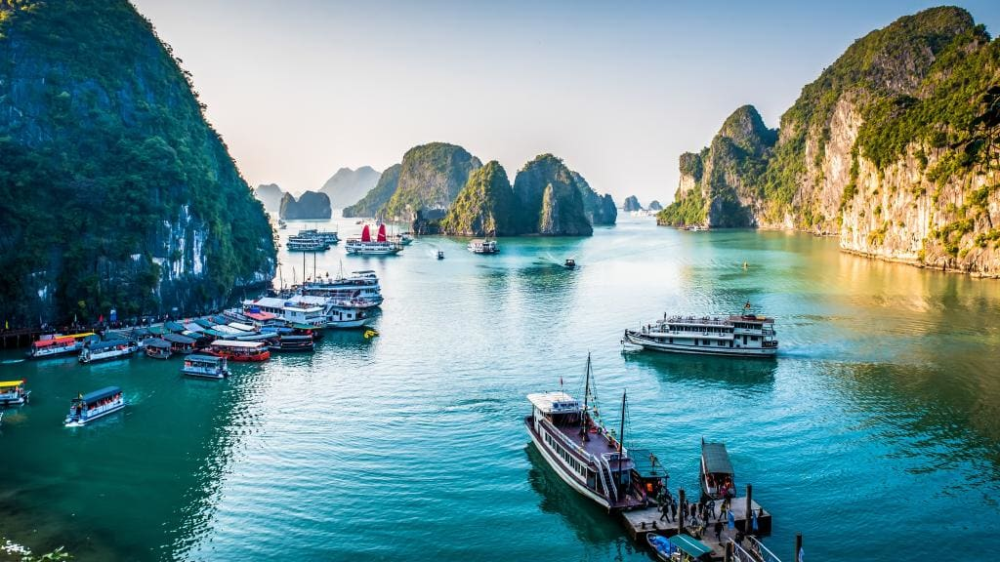
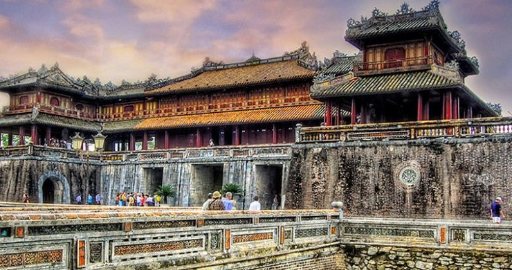
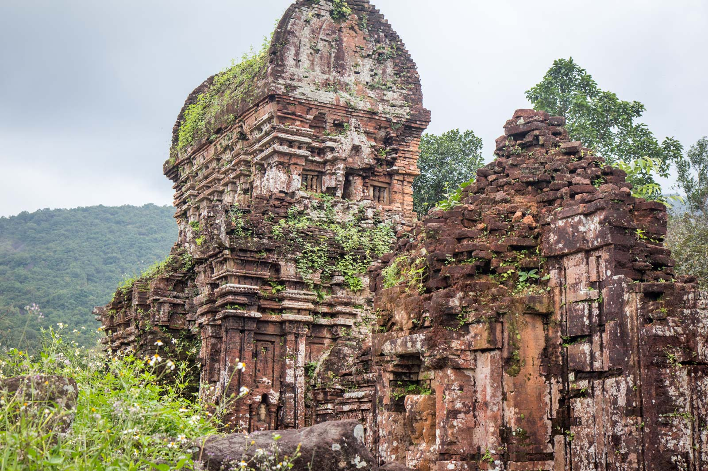
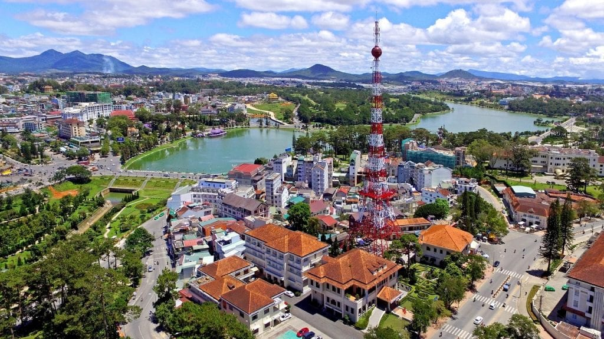
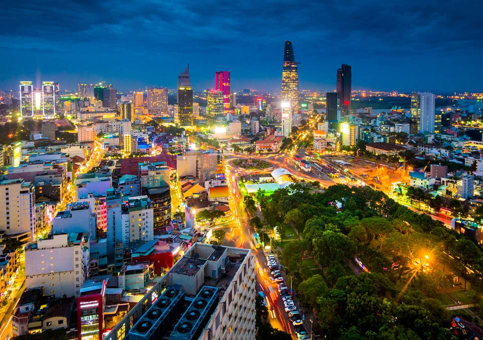
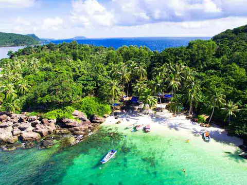

Recommeded places in vietnam.
We’d like to break down the 3 regions that make up the country – the North, Central, and South – and offer you the top attractions and cities to visit on your trip to Vietnam. Within each of these regions are small geographical regions and provinces, but will mainly focus on the larger 3. Each of these regions can be explored individually or as one packaged Vietnam holiday. So, let’s hop into Vietnam’s 3 great regions and the top things to do in each of them.
1.Hanoi
Capital of Vietnam, Hanoi is a stunning blended of tradition, culture, and modern metropolis. History buffs will love exploring the classical lanes of the Old Quarter and pagodas along Hoan Kiem Lake along the French and Chinese architecture. Compacted into a maze of scooter filled streets and loud street markets, Hanoi is a great place to immerse yourself in local culture, from delectable street food to stunning Water Puppet Shows. Those looking to relax can still enjoy the tranquility of Ngoc Son Temple, the Temple of Literature, and Tran Quoc Pagoda.
2.Sapa
Perfect for exploring the Northwest, the township of Sapa is a hikers paradise and gateway to the picturesque rice paddie fields and hillside villages of the region. Most Vietnam tour packages to the North include at least two days to hike Sapa, meet local villagers in Ta Van, and learn about the ethnic minorities of the region.
3.Halong Bay
Probably the most famous attraction in Vietnam, Halong Bay is a world renowned World Heirtage site composed of karst islands, tranquil green waters, floating villages, and hidden caves. You can spend a week exploring its over 1,600 islands and 43,400 ha landscape and still not get tired of it. A Halong Bay cruise is a must for any visitor to Vietnam.
4.Ninh Binh

Though it is sometimes overlooked on Vietnam tours, Ninh Binh is one of the many hidden gems of Vietnam. Located in the Red River Delta, this province houses the birthplace of Vietnam, the ancient capital of Hoa Lu, and Bai Dinh Temple, where the largest Buddha statue in Southeast Asia dwells. Alongside being an important historical site, Ninh Binh province is also home to Trang An Scenic Complex, a stunning array of rivers and mountains that was most recently featured in “Kong: Skull Island.”Here you can discover Tam Coc, or “three caves,” an enchanting collection of natural caves that can explore by small boats. Tam Coc is also known as “Halong Bay on land.”
5.Danang

One of the gateways to Vietnam, Danang is usually only known for its international airport and the easy transfer to Hoi An, and that’s a shame. Evolving just as fast as Dubai, Danang has transformed from a rural and traditional township to a stunning, modern city with a variety of hotels, restaurants, and attractions.This is most notably seen in the Dragon Bridge, which is best visit at night when it shines. You can enjoy its any gorgeous forests, take a day trip to the towering Marble Mountains, or hike the tropical Ba Na Hills, but do not dismiss the beauty of this great city.
6.Hoi An

Known as the ancient town, Hoi An rests on the northern bank of the Thu Bon River, with any of the waterways running through the city as picturesque canals. With fishing and agriculture as the chief industries, you can commonly see boats navigating the canals with fresh food for markets. Peaceful, Hoi An is one of the best places to immerse yourself in Vietnamese culture, with numerous cultural tours to learn from local farmers and fisherman firsthand.You can also explore the local architecture and attractions, such as the Japanese Covered Bridge, Chinese Assembly Halls, and the Ancient Town itself. It is also the closest major city to My Son, but we’ll get to that a little later.
7.Hue
Once the capital of the Nguyen Dynasty and Vietnam, Hue is just 3 hours from Hoi An and 2 hours from Danang. Resting on the Perfume River, Hue is similar to Hoi An in it’s rich historical heritage, housing Hue Citadel (site of the Imperial City), Thien Mu Pagoda, and the Minh Mang Tombs. Beyond the city, visitors can easily join a cruise along Perfume River to encounter the local craft villages in the region.Or, if you’re looking to escape to nature, head on over to Bach Ma National Park, which is home to thousands of rare fauna and flora.
8.My Son
Another famous site in Vietnam, My Son Sanctuary is a UNESCO World Heritage Site composed of ancient Hindu temples built by the Champa kings. Set in a lush valley, the ruins are composed of roughly 20 structures of various architectural styles. A must see for any trip to Central Vietnam, a day trip from Hoi An can easily be arranged with a local guide to learn the historical and religious significance of the site
8.Da lat
Much further south is Da Lat, a inland city of cool weather, French-colonial architecture, and fruit farms. Concidered somewhat out of place compared to the more tropical and traditional regions of Vietnam, Da Lat is a popular vacation spot for domestic travelers, while being a perfect break for international tourists who are drained form the humidity.You can also enjoy a visit to Pongour Waterfall, a stunning cascade, or, if you are looking for something out of place on your trip, visit Hang Nga guesthouse, aka the Crazy House, designed by ipressionist Dang Viet Nga.
9.Nha Trang

Now, Vietnam is not all just majestic landscapes, historical cities, and cultural encounters – it’s also a great spot to relax by the beach. If you’re looking for a beachside vacation, than Nha Trang is the place to be. Home to multiple lovely beach resorts, Nha Trang is a laidback city perfect for relaxing in the and partying in the night.
10.Ho Chi Minh
Formerly known as Saigon, Ho Chi Minh City was named in honor of Ho Chi Minh, the late president of the Democratic Republic of Vietnam. Like it’s Northern neighbor Hanoi, Ho Chi Minh City is rich in traditional architecture and culture, but also leans more towards a modern metropolis, with the growing residential districts.Here you’ll encounter more Western-style buildings, such as the French-colonial Notre Dame Cathedral, the Saigon Opera House, and Reunification Palace, all must see spots in the city. It is also the gateway to two other key attractions in Vietnam.
11.Phu Quoc
Lastly, we have Phu Quoc, a twin to Nha Trang at the very end of Vietnam. The largest island in Vietnam, Phu Quoc is the perfect end to your Vietnam trip, offering teh chance to relax at a lovely resort, kayak to secluded beaches, and enjoy a magical sunset.
source:theculturetrip.com